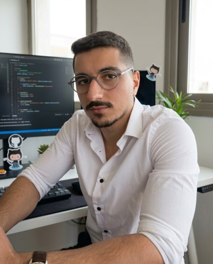

Élève ingénieur en 4ème année à ESPRIT, spécialité Data Science. Je conçois des systèmes de machine learning et des applications full-stack web, mobiles et IA. Stage 2026 chez TICOP : système de recommandation commerciale (CatBoost, FastAPI) sur 1,8M+ transactions réelles. Lauréat du 1er prix et de la 2ème place au Bal des Projets ESPRIT, vice-président du club BRAINIX IA.
| Langages | Python · Java · PHP · JavaScript · TypeScript · Dart · C · C++ · SQL · HTML/CSS |
| Data Science / ML | pandas · NumPy · scikit-learn · CatBoost · LightGBM · PyTorch · Hugging Face · DistilBERT · YOLOv8 · MediaPipe · Jupyter |
| IA / LLM | RAG · LangChain · Qdrant · Gemini / OpenAI / GROQ APIs · OpenCV · Tesseract OCR · MCP |
| Web / Frontend | React · Next.js · Symfony · Twig · Three.js · Framer Motion · Tailwind CSS · Bootstrap · Vite |
| Backend & APIs | FastAPI · Django REST · Spring Boot · Node.js · Celery · Stripe · SendGrid · Google Meet API |
| Mobile | Flutter (Dart) · Android · iOS · Firebase Auth · Firestore · Firebase Storage |
| Bases de données | PostgreSQL · MySQL · Supabase · Firestore · Qdrant · Redis · Doctrine ORM |
| DevOps & Sécurité | Docker & Compose · Git / GitHub · Linux · Maven · Composer · n8n · PHPUnit · Pytest · JWT · OAuth · 2FA |
| Embarqué & Design | Arduino · Raspberry Pi · MPLAB · ISIS · Figma · Photoshop · Illustrator · Premiere Pro · Canva |
| Outils | IntelliJ IDEA · VS Code · Fleet · Qt Creator · Antigravity · Claude · ChatGPT · GitHub Copilot · Gemini |
Moteur RAG prêt pour la production — chat avec vos PDFs. Next.js 14, FastAPI, Qdrant, Gemini / OpenAI. Entièrement conteneurisé, recherche sémantique vectorielle.
github.com/youssefabbes/Synapse-Entreprise-RAG-Document-EnginePlateforme d'analyse crypto full-stack : données de marché temps réel, analyse de sentiment IA et prévisions ML (LSTM/ARIMA). Tableau de bord interactif, PostgreSQL, n8n.
github.com/youssefabbes/Autonomous-MarketHelpdesk / CRM intelligent : chaque ticket est analysé en asynchrone (Celery + Redis) par des modèles NLP — sentiment, catégorisation zero-shot, réponse suggérée. Accès par rôles (JWT), tableau de bord BI.
github.com/youssefabbes/HelpDesk-ProjectApplication mobile de coaching sportif pour débutants (en développement) : vérification de posture par IA sur l'appareil, comptage de répétitions, journal offline-first, progression adaptative, nutrition avec reconnaissance d'aliments par photo.
Plateforme web intelligente de gestion logistique. Symfony, PHP, JavaScript, Bootstrap. Chatbot IA, reconnaissance faciale, prédiction écologique d'itinéraires, front/back office responsive.
Application de bureau C++ / Qt pour la maintenance maritime : interventions, contrats, factures. Détection d'anomalies, analyse prédictive, capteurs Arduino simulés.
Application cross-platform pour centraliser la vie étudiante à ESPRIT : clubs, événements, réservation de sièges via carte interactive. Déployée en production.
espritsphere-youssefabbes.netlify.appApplication de quiz et jeux de cartes avec multijoueur temps réel, animations soignées et gameplay synchronisé iOS / Android / Web.
github.com/youssefabbes/LammaPlay